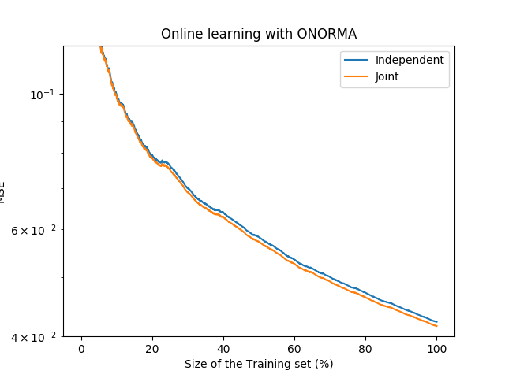

Online Learning with Operator-Valued kernels¶
An example to illustrate online learning with operator-valued kernels.
Out:
Fitting Independent Gaussian.
training time: 30.243 s
MSE: 0.112
Fitting Independent DotProduct, mu=0.
training time: 16.137 s
MSE: 0.110
Fitting Joint DotProductKernel, mu=0.2.
training time: 10.255 s
MSE: 0.100
import operalib as ovk
import numpy as np
import matplotlib.pyplot as plt
import time
n = 5000
d = 20
p = 10
X, y = ovk.datasets.toy_data_multitask(n, d, p, random_state=0)
est = ovk.ONORMA('DGauss', A=np.eye(p), gamma=.25,
learning_rate=ovk.InvScaling(2.), lbda=0.01)
print('Fitting Independent Gaussian.')
start = time.time()
err_i = np.empty(n)
err_i[0] = np.linalg.norm(y[0, :]) ** 2
est.partial_fit(X[0, :].reshape(1, -1), y[0, :])
for t in range(1, n):
err_i[t] = np.linalg.norm(est.predict(X[t, :].reshape(1, -1)) -
y[t, :]) ** 2
est.partial_fit(X[t, :], y[t, :])
err_ci = np.cumsum(err_i) / (np.arange(n) + 1)
print(' training time: %.3f s' % (time.time() - start))
print(' MSE: %.3f' % err_ci[-1])
plt.semilogy(np.linspace(0, 100, err_ci.size), err_ci,
label='Independent Decomposable Kernel')
mu = 0
est = ovk.ONORMA('DotProduct', mu=mu,
learning_rate=ovk.InvScaling(.05), lbda=0.01)
print('Fitting Independent DotProduct, mu={}.'.format(mu))
start = time.time()
err_j = np.empty(n)
err_j[0] = np.linalg.norm(y[0, :]) ** 2
est.partial_fit(X[0, :].reshape(1, -1), y[0, :])
for t in range(1, n):
err_j[t] = np.linalg.norm(est.predict(X[t, :].reshape(1, -1)) -
y[t, :]) ** 2
est.partial_fit(X[t, :], y[t, :])
err_cj = np.cumsum(err_j) / (np.arange(n) + 1)
print(' training time: %.3f s' % (time.time() - start))
print(' MSE: %.3f' % err_cj[-1])
plt.semilogy(np.linspace(0, 100, err_cj.size), err_cj,
label=r'Independent DotProduct Kernel: $\mu$={}'.format(mu))
mu = .2
est = ovk.ONORMA('DotProduct', mu=mu,
learning_rate=ovk.InvScaling(0.05), lbda=0.01)
print('Fitting Joint DotProductKernel, mu={}.'.format(mu))
start = time.time()
err_j = np.empty(n)
err_j[0] = np.linalg.norm(y[0, :]) ** 2
est.partial_fit(X[0, :].reshape(1, -1), y[0, :])
for t in range(1, n):
err_j[t] = np.linalg.norm(est.predict(X[t, :].reshape(1, -1)) -
y[t, :]) ** 2
est.partial_fit(X[t, :], y[t, :])
err_cj = np.cumsum(err_j) / (np.arange(n) + 1)
print(' training time: %.3f s' % (time.time() - start))
print(' MSE: %.3f' % err_cj[-1])
plt.semilogy(np.linspace(0, 100, err_cj.size), err_cj,
label=r'Joint DotProduct Kernel: $\mu$={}'.format(mu))
plt.title('Online learning with ONORMA')
plt.xlabel('Size of the Training set (%)')
plt.ylabel('MSE')
plt.legend()
plt.show()
Total running time of the script: ( 0 minutes 56.694 seconds)